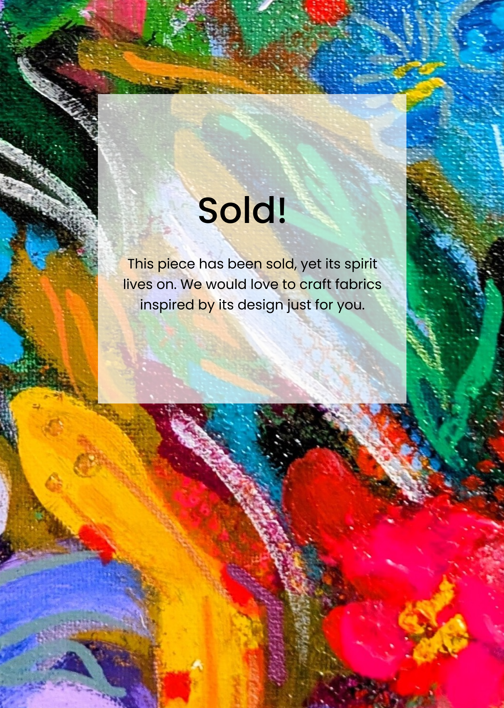
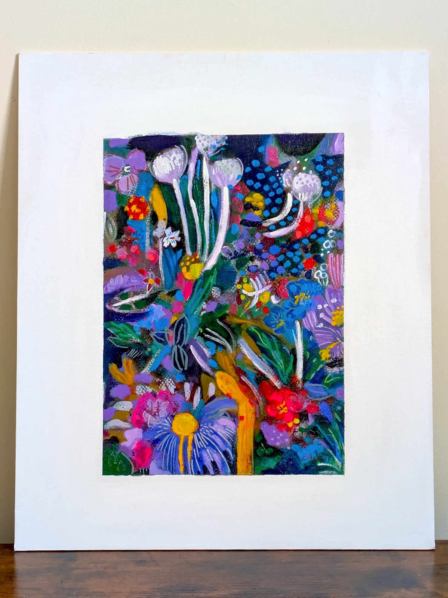
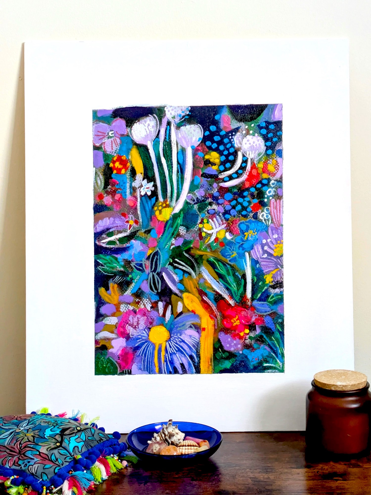
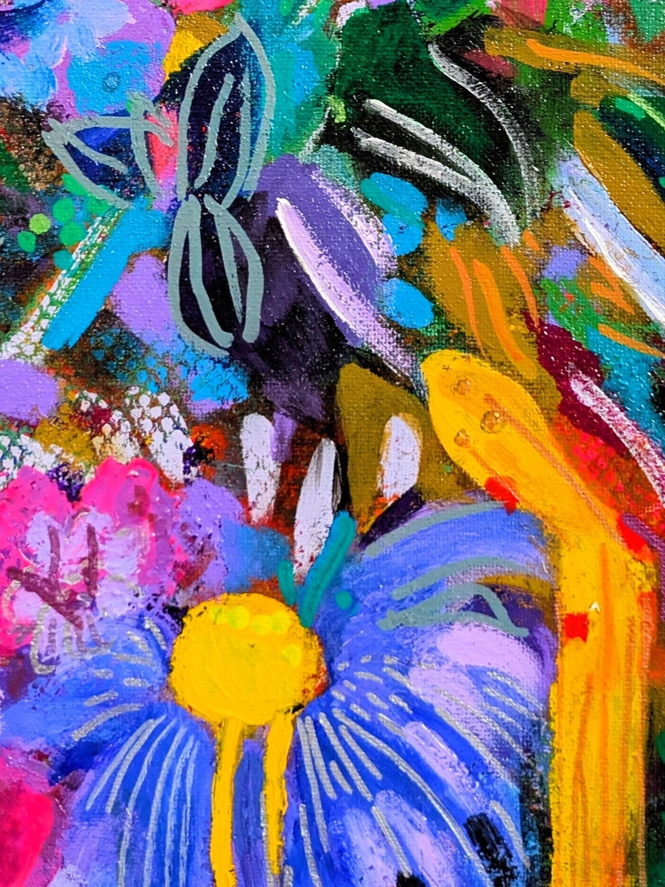
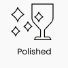

Avatar Flowers
(acrylic painting)
Acrylic painting. Sold!
This one-of-a-kind acrylic painting has found a home. It captures the electric energy of nature, reimagined into a playful yet powerful composition created with acrylic inks.
Living art designed to be felt
The work resonated deeply with a couple who genuinely appreciates art.
Letting go of a piece I have created with such love is never easy. I become deeply attached to my work. It’s never just the painting itself, but the heart and soul within every brushstroke, the emotional depth and thoughtful intention behind creating something truly unique.
However, creating art for people’s homes is deeply gratifying. I love being part of something bigger, bringing joy through colour and emotional expression.
My style has been described as countryside-inspired, which feels right to me. It carries a sense of calm and village tranquility into urban interiors.




